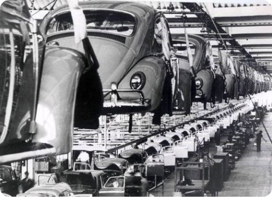

Industrialziação
A industrialização brasileira é um processo histórico que transformou o Brasil de uma economia agrária para uma economia industrial e urbana. Este processo começou a se intensificar no final do século XIX e se consolidou ao longo do século XX.
A industrialização no Brasil começou lentamente, com pequenas fábricas de produtos alimentícios, têxteis e outros bens de consumo.
Definição
A industrialização é um processo histórico e econômico pelo qual uma sociedade ou uma região passa da produção predominantemente agrícola e manual para a produção em larga escala de bens manufaturados em fábricas utilizando máquinas, sendo que esse processo é impulsionado por diversos fatores, como avanços tecnológicos, mudanças nas relações de produção e trabalho, disponibilidade de capital para investimento e mudanças nas políticas governamentais.
A industrialização marca uma transição fundamental na economia de uma sociedade, desencadeando uma série de mudanças sociais, políticas e culturais.
A industrialização também está associada à urbanização, já que as fábricas geralmente são concentradas em áreas urbanas, atraindo uma grande quantidade de trabalhadores das áreas rurais em busca de emprego. Esse influxo de pessoas para as cidades leva ao crescimento urbano e à formação de centros industriais.